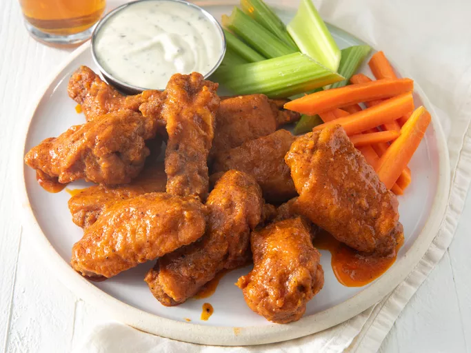

Buffalo Chicken Wings

Description
Ingredients
- ½ cup all-purpose flour
- ¼ teaspoon paprika
- ¼ teaspoon cayenne pepper
- ¼ teaspoon salt
- 10 chicken wings
- ¼ cup butter
- 2 cups vegetable oil for frying, or as needed
- ¼ cup hot sauce
- 1 dash ground black pepper
- 1 dash garlic powder
Steps
- Whisk together flour, paprika, cayenne pepper, and salt in a large bowl.
- Place chicken wings in the bowl with flour mixture and toss until evenly coated.
Transfer wings to a 9x13-inch glass baking dish and arrange in a single layer.
Cover and refrigerate for 1 to 1 1/2 hours.
- Add about 1 inch oil to a deep, heavy skillet; heat to 375 degrees F (190 degrees
C). (The oil should be just enough to cover wings entirely.)
- Meanwhile, combine butter, hot sauce, pepper, and garlic powder in a separate
small saucepan over low heat. Cook and stir until butter is melted and mixture is
thoroughly blended. Remove from the heat and reserve for serving.
- Fry coated wings in the hot oil for 10 to 15 minutes, or until they begin to crisp
and turn brown. Maintain the oil temperature while cooking. Remove cooked wings
from hot oil and let drain on paper towels or a wire rack.
- Place wings in serving bowl, add hot sauce mixture, and stir together. Serve.